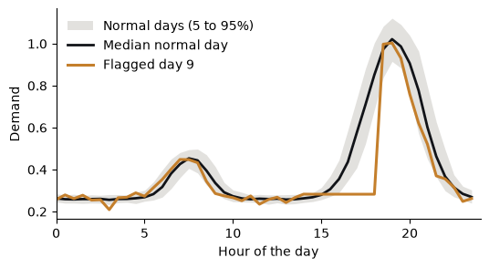

Flag anomalous days#
Fit a detector on the normal days of one meter, set a threshold that bounds the false alarms, and see which days it flags.
import matplotlib.pyplot as plt
import numpy as np
from milia.anomaly.ensemble import Ensemble
from milia.data import profiles, synthetic
from milia.features.window import vector
BLACK, GREY, OCHRE = "#111318", "#8E887D", "#C47F2C"
hours = np.linspace(0, 24, 48, endpoint=False)
population = synthetic.generate(meters=30, days=90, steps=48, rate=0.06)
meter = int(np.flatnonzero(population.anomalies.sum(axis=1) >= 3)[0])
days = np.asarray(profiles.tensor(population.pivot))[meter]
planted = population.anomalies[meter].astype(bool)
int(planted.sum()), days.shape
(6, (90, 48))
Features of each day#
features = [vector(day) for day in days]
len(features), features[0].shape
(90, (54,))
Fit on normal days and calibrate#
The detector learns what a normal day looks like. The threshold comes from held-out normal days, so the expected share of
normal days that are flagged is at most alpha.
normal = np.flatnonzero(~planted)
detector = Ensemble().fit([features[i] for i in normal[:50]])
detector.calibrate([features[i] for i in normal[50:]], alpha=0.1)
flags = np.asarray(detector.flag(features))
flagged = np.flatnonzero(flags)
flagged, np.flatnonzero(planted)
(array([ 9, 12, 26, 43, 56, 64, 81]), array([ 9, 12, 26, 43, 64, 84]))
caught = int((flags & planted).sum())
falsely = int((flags & ~planted).sum())
caught, int(planted.sum()), falsely, int((~planted).sum())
(5, 6, 2, 84)
Look at a flagged day#
low, high = np.percentile(days[~planted], [5, 95], axis=0)
day = int(flagged[np.isin(flagged, np.flatnonzero(planted))][0])
fig, ax = plt.subplots(figsize=(6, 3))
ax.fill_between(hours, low, high, color=GREY, alpha=0.25, lw=0, label="Normal days (5 to 95%)")
ax.plot(hours, np.median(days[~planted], axis=0), color=BLACK, lw=2, label="Median normal day")
ax.plot(hours, days[day], color=OCHRE, lw=2.2, label=f"Flagged day {day}")
ax.set(xlabel="Hour of the day", ylabel="Demand", xlim=(0, 24))
ax.legend(frameon=False)
ax.spines[["top", "right"]].set_visible(False)
plt.show()

A threshold per group#
When meters differ in what is normal, conformal.mondrian calibrates one threshold per group, and conformal.groupflag
applies it, so each group is judged by its own range. See the detect guide.